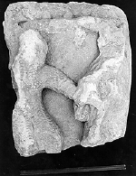
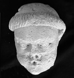

{kind=link}
{kind=link}
 PS74.021.001 Corinthian type capital corner (Carolingian)
PS74.021.001 Corinthian type capital corner (Carolingian)Corner of a Corinthian type capital. Carved concentric curved lines in relief. Abstract pattern. See capitals in Burgundy and Grenoble.
Limestone (9.00 x 8.50 x 5.50 cm).
PS72.017.005 Floral fragment - altar? (Roman)
Floral motif in a continuous scroll with moulding on edge. Very low relief. Worn. This piece is possibly a fragment
from a Roman altar. It was donated by a previous owner of the site.
Limestone, very fine yellow-gray (19.00 x 13.00 x 13.00 cm).
PS70.001.048 Sarcophagus fragment (Early Christian)
Part of a wreath, about one quarter of circle remains.
Limestone (29.90 x 19.00 x 15.50 cm).
PS74.021.001 Corinthian type capital corner (Carolingian)
Corner of a Corinthian type capital. Carved concentric curved lines in relief. Abstract pattern. See capitals in
Burgundy and Grenoble.
Limestone (9.00 x 8.50 x 5.50 cm).
PS70.001.049 Corbel (Carolingian?)
Corbel. Two parallel incisions with dots above them may suggest eyes and nose. Possibly a horse? Most details
abraded and illegible.
Limestone (34.00 x 23.00 x 14.00 cm).
PS86.070.024 Cornice block (Carolingian to Romanesque)
Large section of cornice or impost block with rinceaux encasing palmettes. Triple scored vine scroll in a flat
somewhat incised 2 dimensional relief of a linear etched type. Patterned effect.
Limestone (19.50 x 58.00 x 28.00 cm).
 PS87.096.003 Cornice block (Carolingian to Romanesque)
PS87.096.003 Cornice block (Carolingian to Romanesque)
Cornice molding with one shell-shaped rosette and four 7 pointed stars encased in vine scroll with double layered
palmettes. Highly stylized and graphic with zigzag patterns on leaf edges and striations throughout. Relates to a
number of pieces found at Psalmodi. Found together with and related to PS87.096.002.
Limestone (19.00 x 86.50 x 37.50 cm).
PS88.104.001 Cornice block (Carolingian to Romanesque)
Large section of cornice with rinceaux. Perhaps some drill work. Swelling vine scrolls with 3 tendrils and ending in
four and a half broad turning palmettes, very spherical in shape. Horn-shaped elongated palmettes between vine
scrolls. Deep relief with some undercutting.
Limestone (20.50 x 72.00 x 32.50 cm).
PS87.096.001 Griffon capital (Romanesque)
Carved capital with image of griffon in profile and snake on each of four faces. Flat abacus and double-filleted
base. Deep relief with incised detail. Very animated and stylized with griffon's mouth open as if to attack serpent.
Each side of capital in different condition of preservation: fairly crisp on two sides, worn rather badly on third
and very badly on fourth.
Limestone (35.50 x 25.00 x 30.10 cm, including base and abacus).
PS74.024.010 Cornice block fragment (Romanesque)
Cornice moulding with abraded palmette and rinceaux. Thick, rope-like vine scroll somewhat more schematic than
organic. Palmette with concave leaf segments.
Limestone (8.00 x 19.50 x 11.00 cm).
 PS70.001.045 Volute fragment (Romanesque)
PS70.001.045 Volute fragment (Romanesque)
Volute fragment.
Limestone (8.40 x 5.00 x 5.50 cm).
PS73.018.008 Hand (Romanesque)
Hand showing 4 fingers remaining, and edge of sleeve. Elongated form, somewhat graceful.
Limestone, coarse with distinctive surface revealing organic composition of stone. (9.80 x 6.10 x 3.10 cm).
PS70.001.046 Historiated capital (Romanesque)
Historiated capital with Massacre of the Innocents. Shows soldier striking baby held by mother. Figures broken off at
knees. Few surfaces remain beyond soldiers' chain mail. Faces badly abraded. Joins to PS70.001.047. Published Alan
Borg, "Psalmodi", Gesta, vol X 2, 1071, 67. Also published John Nougaret et al "Inventaire general des monuments et
des richesses artistiques de la France", Gard. Canton Aigues-Mortes 1973, I, 98: II, 254; III 776-1/2, 256, III
788-1/3.
Limestone (21.60 x 185.00 x 14.80 cm).
 PS70.001.047 Historiated capital - Massacre of the Innocents
(Romanesque)
PS70.001.047 Historiated capital - Massacre of the Innocents
(Romanesque)
Historiated capital with Massacre of the Innocents. Shows Herod giving order for the massacre. His arm is raised in a
gesture of command. Figure framed by architectural form with ornament. Most surface detail abraded, Herod's face is
missing. Probably from Romanesque cloister. Joins to PS70.001.046
Limestone (155.00 x 18.00 x 9.00 cm).
 PS71.006.002 Corinthian Romanesque capital (Romanesque)
PS71.006.002 Corinthian Romanesque capital (Romanesque)
A projecting group of leaves, part of a twelfth century Corinthian Romanesque capital. A finely carved bunch of
leaves on each side with central spray of leaves with deep drilled indentations in the middle. Quality - high.
Limestone (10.00 x 5.00 x 6.00 cm).
PS85.024.007 Miniature architectural fragment (Romanesque)
A fragment of miniature architectural form, probably from an altar frontal. On the right, a vertical panel with two
flat panels flanking a conclave section. Joining that to the left is the beginning of an arch, about half the arch
remains. Remnants of Corinthian capital are found under the arch. Above the arch are a tower, three windows and a
tile roof, to theleft of tower, a structure with a window and overhanging triangular roof with four small round
openings. Two other pieces were also found which are part of the same altar.
Limestone (63.50 x 38.00 x 9.50 cm).
PS78.016.064 Capital or springer fragment (Late Romanesque or
Gothic)
Part of a round capital or springer. Has square hole in center. Rich acanthus-type foliage runing in regular pattern
around the form. Good deep carving with fine details and use of drill which creates a three-dimensional quality to
surface of relief, emphasizing shadow and light effects. Somewhat worn and many leaves broken.
Medium fine limestone (7.50 x 9.00 x 14.60 cm).

PS72.009.035 Head of male with tonsure (Gothic)
Head of male showing tonsure in braid-like pattern and showing pursed lips (O-shape). Well-chiseled articulated eyes
with precise lines forming lids. Nose and mouth damaged. Possibly from capital (or abacus or corbel) because of small
size and whistling expression of face.
Limestone (11.00 x 9.00 x 6.50 cm).
PS70.001.032 Foliate relief (Gothic)
Foliate design in horizontal relief, possibly from springer, capital or other architectural component. Floral
moulding, bevel cuts in drill work.
Smooth limestone (14.00 x 12.00 x 4.00 cm).
PS72.001.002 Corbel quatrefoil (Gothic)
Fragment of a corbel quatrefoil carved with deep undercutting in the quatrefoil and extending back 6 cm from the
front face of the quatrefoil. Carving extends back on all four sides.
Limestone, coarse (7.00 x 5.00 x 8.00 cm).
PS74.006.015 Column capital (Gothic)
Small column capital. The motif encircling the cushion appears to be an arcade of pointed tracery-like forms, perhaps
arches.
Limestone (17.60 x 15.20 x 16.40 cm).
PS70.004.010 Leaf fragment (Gothic)
Three petaled leaf with delicate serrated edges in triangular fragment.
Limestone, creamy yellow (11.00 x 8.00 x 8.00 cm).
PS80.UCAT.004 Capital with fig leaves and armorial shield (Gothic)
Capital carved on four sides. On three sides are large, broad, flat fig leaves with raised veins. Leaves have deep
voids between them for a shadow affect and overlap each other. Fourth side shows fragment of one, possibly two,
armorial shields with a relief of an agricultural tool, possibly a pruning hook. The shaft of the capital is
octagonal and the ribbed lines of the octagon are carried lengthwise through the moulding and capital.
Limestone (44.00 x 25.00 cm).
{kind=link}
{kind=link}
{kind=link}
{kind=link}
{kind=link}
{kind=link}
{kind=link}
{kind=link}
{kind=link}
{kind=link}
{kind=link}
{kind=link}
{kind=link}
{kind=link}
{kind=link}